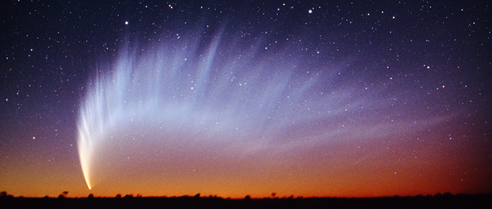

Les comètes
Les comètes décrivent autour du Soleil des orbites beaucoup plus elliptiques que celles des planètes. Certaines s'éloignent tant du système solaire que leur retour est imprévisible. D'autres ont des orbites elliptiques à l'intérieur du système et des passages au périhélie espacés de quelques années seulement. Ce sont les comètes à courte période.
Les comètes possèdent un noyau, conglomérat de glace, d'eau, de méthane, d'oxyde de carbone et de roches, entouré d'une auréole de gaz et de poussières. Quand une comète s'approche du Soleil, l'auréole est balayée vers l'arrière, formant une queue. C'est sous cet aspect caractéristique qu'on les aperçoit de la Terre, avec leur chevelure lumineuse et une longue queue s'étirant parfois sur des millions de kilomètres. Les comètes à courte période sont en général dépourvues
de queue, car leurs particules se sont dispersées dans l'espace. Une comète peut avoir deux queues, l'une formée de gaz et l'autre de poussières.
Les comètes portent les noms de ceux qui les ont découvertes. La plus célèbre est la comète de Halley, qui revient tous les 76 ans environ dans le système solaire interne. Son dernier passage date de 1986.
Plan du site | Contact | Site réalisé par Mathieu Morainville.